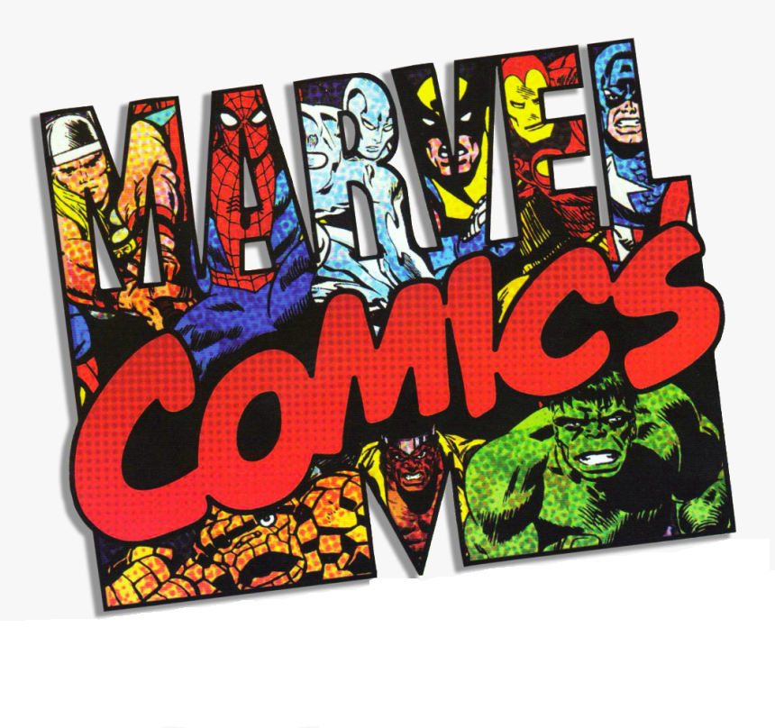

.jpg)
STAN LEE
1922-2018
(Marvel Backbone)
Stan Lee was an American comic book writer, editor, publisher, and producer. In collaboration with others at Marvel—particularly co-writers/artists Jack Kirby and Steve Ditko—he co-created characters including superheroes Spider-Man, X-Men, Iron Man, Thor, Hulk, Ant-Man, Wasp, Fantastic Four, Black Panther, Daredevil, Doctor Strange, Scarlet Witch, and Black Widow.These and other characters' introductions in the 1960s pioneered a more naturalistic approach in superhero comics, and in the 1970s Lee challenged the restrictions of the Comics Code Authority, indirectly leading to changes in its policies. In the 1980s he pursued the development of Marvel properties in other media, with mixed results.
Stanley Martin Lieber was born on December 28, 1922, in Manhattan, New York City, in the apartment of his Romanian-born Jewish immigrant parents, Celia (née Solomon) and Jack Lieber, at the corner of West 98th Street and West End Avenue.Lee was raised in a Jewish household.

DID YOU KNOW!
- Captain America was not a founding member of the Avengers.
- The Scarlet Witch created an alternative reality where she and Vision had children.
- Human Torch made the first appearance of any Marvel hero in the comics.
- Originally, Captain America was created as a propaganda piece for the U.S army during WWII..
- Deadpool is a member of the Avengers.
- At one point in time, all five of the original members of the Avengers resigned.
- There is a Japanese version of Spider-Man that gained his powers from aliens.